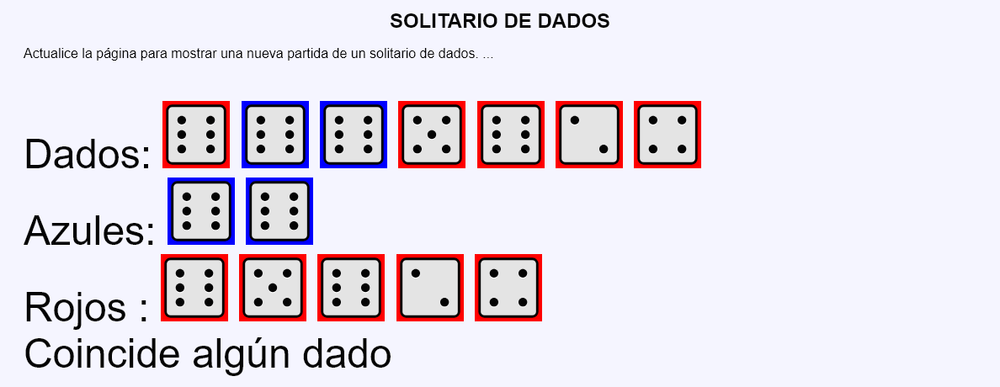
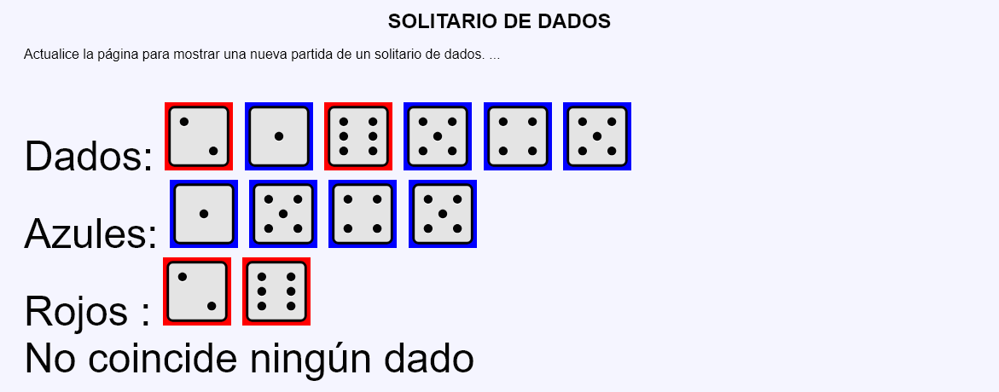

En este ejercicio se debe crear un programa que muestre una partida del juego "Solitario de dados".


<p style="font-size: 300%;">
Dados:
<img src="img/2.svg" alt="2" width="80" style="background-color: red">
<img src="img/6.svg" alt="6" width="80" style="background-color: blue">
<img src="img/3.svg" alt="3" width="80" style="background-color: blue">
<img src="img/6.svg" alt="6" width="80" style="background-color: blue">
<br>
Azules:
<img src="img/6.svg" alt="6" width="80" style="background-color: blue">
<img src="img/3.svg" alt="3" width="80" style="background-color: blue">
<img src="img/6.svg" alt="6" width="80" style="background-color: blue">
<br>
Rojos :
<img src="img/2.svg" alt="2" width="80" style="background-color: red">
<br>
No coincide ningún dado
</p>